I. Software User Guide
1.1 Feature Overview
Motion Studio is the software platform that controls the motion capture system. In Motion Studio, users can calibrate the camera system and process and capture 3D data. The captured data can be transmitted to other software platforms via real-time data streaming. Motion Studio reconstructs 3D coordinates by computing the marker data from multiple 2D images.
1.2 Software Installation
1.2.1 PC Configuration
I7-11700 / 32G / 256G SSD + 2T
Note: Linux and Apple computers are not supported at this time.
1.2.2 Software Download
Download the latest software installation package from the official website.
1.2.3 Software Installation
1) Run the installation package;
2) During installation, you will be prompted to install the driver. After the driver installation is complete, continue installing the software following the prompts.
1.2.4 Registration and Login
1) Open the installed software to enter the login page;
2) On the login page, select password login and enter the mobile phone number you have registered (the registration steps will be performed by technical support);
3) Enter the initial password provided by the staff;
4) Click the [Login] button to enter the system.
1.2.5 Create a New Project
Click New Project, select the storage location for the project and name it. Once created, you will enter the UI interface.
1.3 Software Interface
The software interface includes a toolbar, a display area, a calibration interface, a device list, and other functional panels, as shown in the following figure:
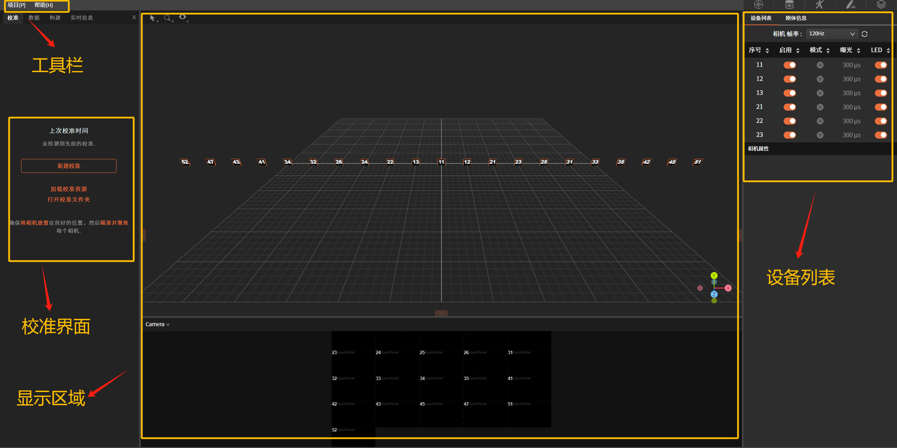
1.3.1 Display Area
The display area contains a 3D view and a camera view.
1) 3D View
In this window you can view the created 3D space, which contains 3D information such as camera positions, marker positions, created rigid bodies, and skeletons.
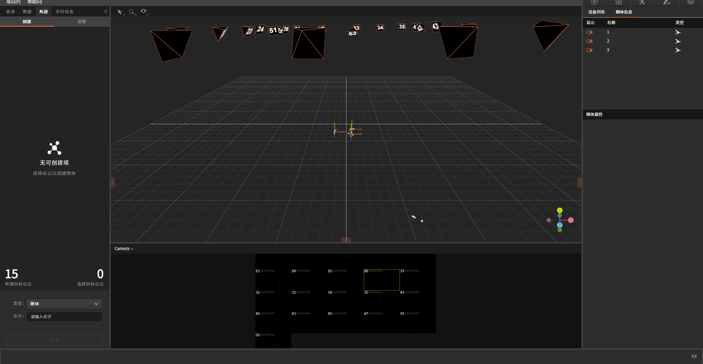
After selecting a rigid body with a bounding box, press and hold the right mouse button to rotate the rigid body to various angles, where:
Red axis: the X axis;
Green axis: the Y axis;
Blue axis: the Z axis;
2) Camera View
In this window you can see the 2D image corresponding to each camera connected to the system, including the camera number, view, and real-time dynamics of all current cameras.
View functions:
-
Drag the window up and down with the mouse to zoom the overall view in and out;
-
Double-click a single camera to focus on it. To focus on multiple cameras, hold down "Ctrl" and click multiple cameras, then double-click any of the selected cameras to complete the multi-camera focus;
-
This window can display four camera modes: Test mode, Tracking mode, Grayscale mode, and JPEG mode. Each mode produces a different image.
1.3.2 Calibration Interface
The "Calibration" interface contains the camera Sample point collection box and the calibration status bar.
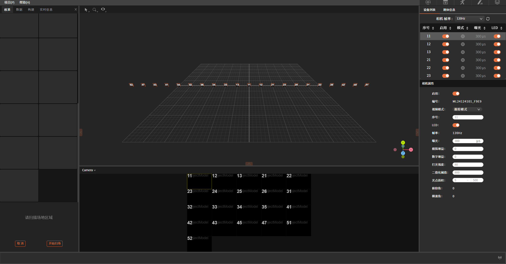
1.3.3 Device List
In this window you can view the properties of each camera connected to the system and adjust the specified parameters of each camera.
Click a blank area in the device list to bring up the corresponding camera properties popup.
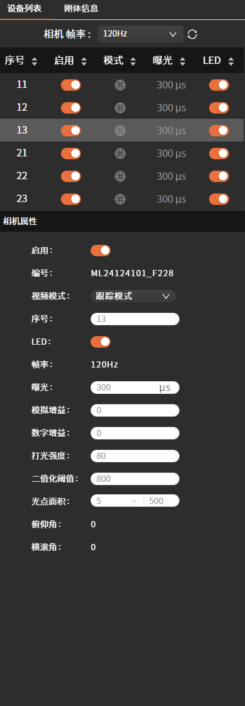
1.3.4 Toolbar
1) Project
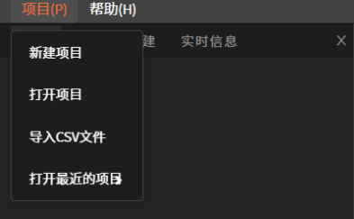
Includes: New Project, Open Project, Import CSV File, and Open Recent Project.
New Project: Select an appropriate storage path for the project. Click this button, name the project in the popup window, and select the desired storage path. After selecting, click "OK" to complete the creation;
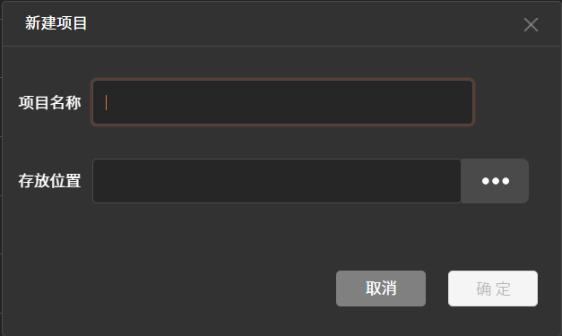
Open Project: Click this button, select the desired project in the popup window, and double-click to open it; then click the "OK" button. Import CSV File: Click this button to open a window for selecting the path of the file to import. After selecting the target file, click OK.
Open Recent Project: This function automatically reads and imports the most recently opened project.
2) Help
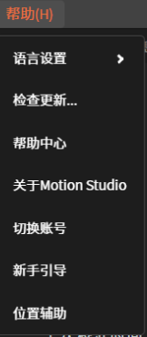
Includes: Language Settings, Check for Updates, Help Center, About Motion Studio, Switch Account, Beginner's Guide, and Position Assist.
Language Settings: Switch between Simplified Chinese and English language modes;
Check for Updates: View the current software version information;
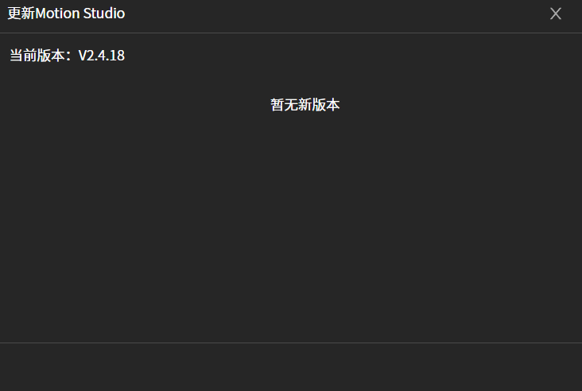
Help Center: Jump to the official website to view more product-related information;
About Motion Studio: View the current version number, user agreement, and privacy policy.
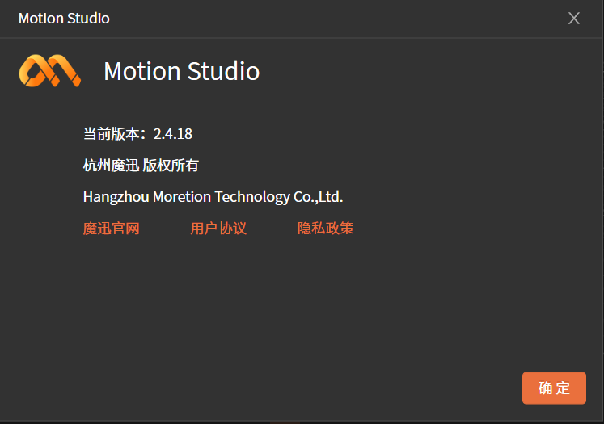
Switch Account: Follow the instructions to switch accounts;
Beginner's Guide: Jump to the official website to view more product-related information;
Position Assist: Used for auxiliary positioning in optical-inertial fusion.
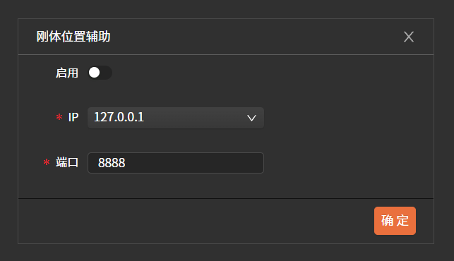
1.4 Software Functions
The detailed workflow includes the following: camera settings, calibration, asset creation, data acquisition, and data transmission.
1.4.1 Camera Settings
-
LED: Refers to the status LED on the camera itself, which can be enabled or disabled;
-
Frame Rate: Refers to the number of images the camera captures per second. The maximum/minimum value depends on the camera model. A higher frame rate helps acquire more data per second; a lower frame rate allows for a longer exposure time.
-
Exposure: Sets the exposure time per frame for the camera. The maximum/minimum value depends on the camera model and frame rate. A longer exposure time produces a brighter image, but may cause motion blur; a shorter exposure time is suitable for high-speed motion.
-
Analog Gain: Boosts the overall image brightness by amplifying the sensor's analog signal. A higher gain value produces a brighter image, but introduces more noise points. Use with caution under low-light conditions.
-
Digital Gain: Amplifies the image's digital signal to enhance brightness. This processing also amplifies noise synchronously, which may cause loss of image detail. It is typically used as a supplement to analog gain; prefer analog gain and exposure adjustments for brightness first.
-
Binarization Threshold: Defines the minimum brightness of pixels the camera will recognize. Increasing the threshold helps filter out non-marker objects, but may also cause marker recognition loss; too low a threshold easily introduces noise points.
-
Spot Area: The pixel area of recognized markers in the image. Used to filter out noise points or larger reflective interference. A minimum/maximum area range can be set to ensure only valid markers are tracked.
1.4.2 Camera Image Modes
Video Mode: Right-click
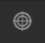
or click the Video Mode drop-down box to switch the view mode of each camera.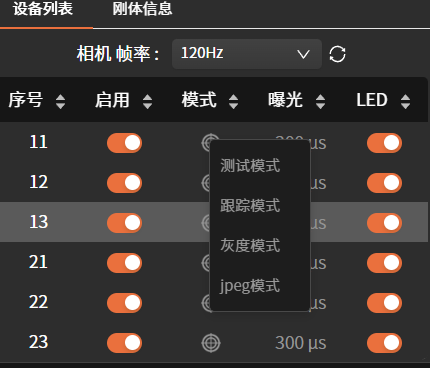
Test Mode:
Tracking Mode: In this mode, the camera automatically identifies markers in the image, computes features such as centroid, position, size, and roundness, and fits them to circular marker 2D coordinates for display, making it easy to monitor synchronously and quickly troubleshoot noise points. This mode achieves high-precision 3D motion data reconstruction with the lowest CPU usage and data processing latency, making it suitable for real-time capture tasks.
Grayscale Mode: In this mode, the corresponding camera page displays a crosshair icon, which can be used to check whether the camera is in focus, facilitating camera adjustment;
JPEG Mode: This mode can be used to adjust the camera angle.
1.4.3 Calibration
Camera calibration is a necessary step before an optical capture system performs accurate 3D reconstruction. This process establishes an accurate mapping from 2D image coordinates to 3D spatial coordinates by computing the specific position and orientation of each camera and determining the lens distortion.
The camera calibration process consists of three operational steps: "Mask Visible Objects", "Scan Field Area", and "Set Ground Plane".
Before performing camera calibration, the following optimizations should be made. First, ensure that the cameras are placed in suitable positions to fully cover the capture space. Second, the cameras must remain stationary during the calibration process. Finally, the camera parameter settings should remain unchanged during calibration. If significant changes to the camera settings affect subsequent capture, recalibration is required and the system should be readjusted.
Note: As the external environment changes, calibration accuracy will degrade even if the cameras have not visibly changed. It is recommended to recalibrate once a day.
1) Mask Visible Objects
Before performing this step, first move any reflective objects out of the field to clear the area and click "New Calibration" on the left;
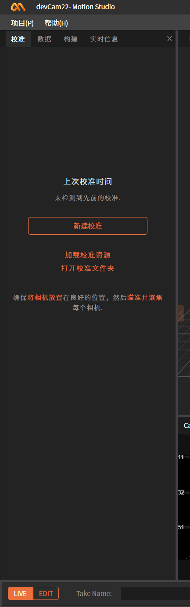
If the situation shown in the left figure below appears, it means there are noise points in the field. Please remove or cover the reflective objects, and only click "Continue" to proceed to the next step after the warning sign disappears.
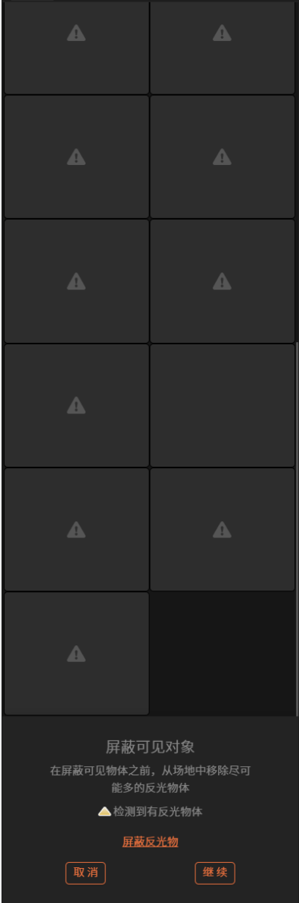
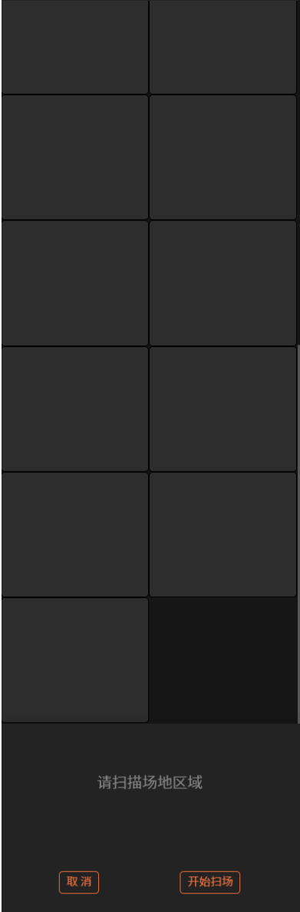
2) Scan Field Area
Click "Start Scanning" and wave the "T-shaped calibration wand" in different directions within the field to draw an "∞" shape, ensuring that the waving range covers the entire capture space. At this time, the status of each camera in the camera view and calibration interface will change.
When the Sample point collection box of each camera in the calibration interface shows the dark green on the left of the figure below, it indicates that the scan was unsuccessful (double-click the color block to view the corresponding camera number in the camera view). Continue waving the calibration wand within the coverage of this camera until the color changes to the light green on the right of the figure below; when all color blocks in the calibration interface have changed to light green, the scan is successful.
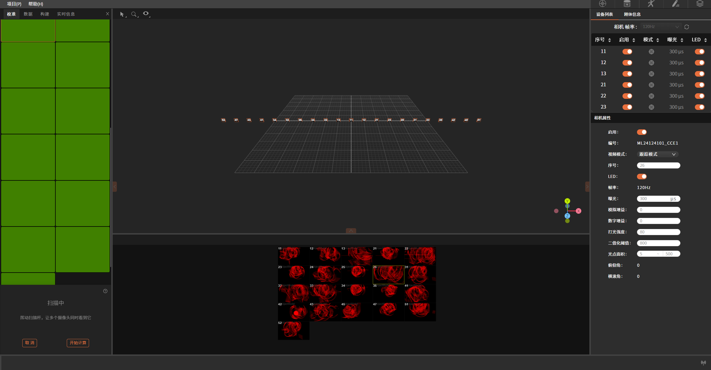
Click "Start Calculation" to proceed to the next step.
3) Calibration Calculation
The time required for calibration calculation depends on the number of cameras, the number of Samples, and the computer performance. During the calculation, you can view the calculation status in the image shown below.
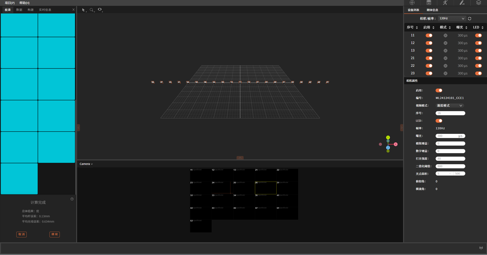
After the calculation is complete, the calibration results will pop up, showing detailed calibration results. The calibration result is directly related to the error. Calibration result categories (in order from worst to best): Poor, Good, Excellent.
If the result is acceptable, click "Continue" to use the result.
4) Set Ground Plane
This step performs ground plane calibration to determine the positional relationship between the cameras and the ground plane. This step requires the L-shaped calibration wand. Place the calibration wand in the usage space, set the coordinate origin and axis directions of the space in the software, select the three markers of the ground calibration wand in the 3D view, and then click "Set Ground Plane".
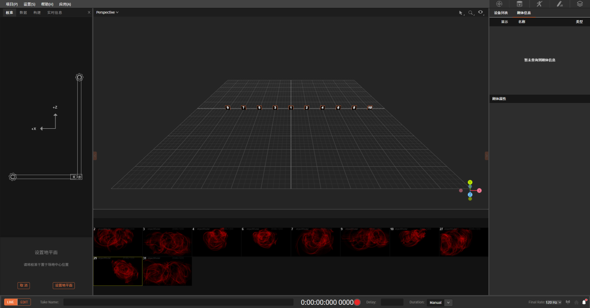
1.4.4 Create a Rigid Body
1) Create a Rigid Body
After the ground plane is set, attach markers to the rigid body of the model to be created, place it within the calibrated field, and select the markers representing the rigid body model with a bounding box in the 3D view. Then click the mouse to box-select the markers. In this way, you can complete the rigid body creation for the selected markers. After creating the rigid body, the markers will be labeled (their colors will change) and connected to each other. You can name the rigid body in the left window, and the rigid body information will be displayed synchronously on the right.
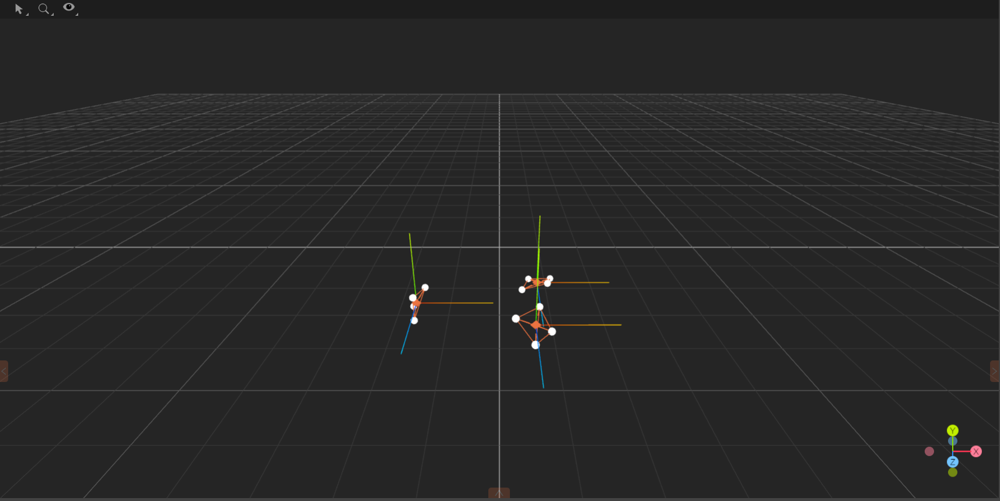
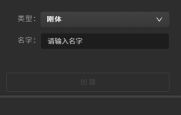
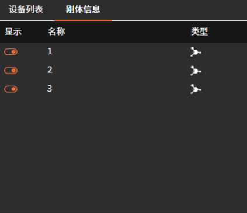
2) Rigid Body Tracking
For a created rigid body, its axis point represents the position and pose of the rigid body. When a rigid body is created, its pivot point is placed at its geometric center by default, and the orientation axes align with the global coordinate axes.
1.4.5 Create a Skeleton Model
Select the "Human Skeleton" template from the drop-down menu in the "Type" column, and attach the markers to the corresponding positions as shown in the figure.
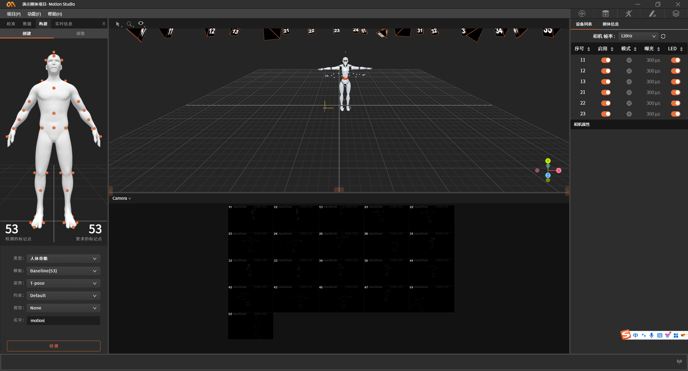
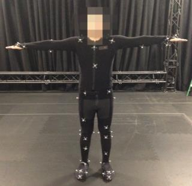
Note: The human skeleton template involves 53 markers in total. Each marker is used to represent a joint position during skeleton modeling. All markers must be placed in suitable positions. Any marker misplaced may cause the human asset creation to fail. Therefore, placing them at predefined positions is very important and can reduce post-processing time.
Operation Steps
After the markers are attached to the model, have the model stand in the camera's optimal capture area and assume the corresponding initial pose;
-
Carefully check the marker positions;
-
Select the corresponding markers in the 3D view and click Create;
-
After creation, the performer follows instructions to perform the initial motion (T-pose / A-pose) for pose correction;
-
After completing the above steps, you can proceed to data acquisition.
1.4.6 Data Streaming
The data streaming function in the software is used to stream the rigid body and human data captured by the software to other software or applications. The data includes the position and pose of rigid bodies and the position and pose of the human body.
Click in the lower-right corner of the software to open the streaming window, and click Enable to turn on data streaming. The data format is JSON. In the current version, partners need to parse the data themselves. Official plugins for applications such as MotionBuilder, Maya, Blender, Unreal Engine, and Unity will be released successively.